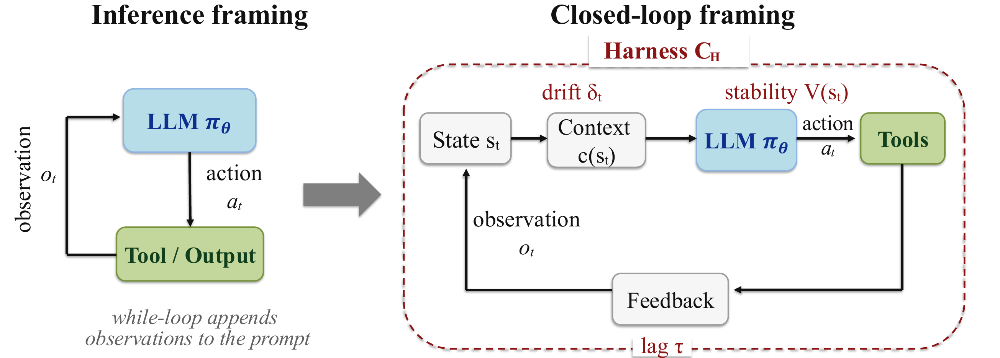

Harness Cards
Reports should disclose execution, tools, context construction, scheduling, observability, verification, and governance.
Position Paper
Long-horizon LLM-agent benchmark scores are not properties of models alone. They are jointly produced by the model and the execution harness that constructs context, mediates tools, validates outputs, schedules recovery, and closes the feedback loop around the model.
The usual framing treats an agent as a model in a while-loop. The closed-loop framing makes the harness the controller: stability, context drift, feedback timing, tool mediation, verification, and recovery are harness properties that shape long-horizon outcomes.

Once agent evaluation is treated as a closed-loop control problem, harness variance becomes a quantity that must be measured. For comparable frontier models on long-horizon tasks, harness configuration can explain as much or more performance variance than model choice.

Harness variance
HV(M) = VarH ∼ P(H)[B(M, H)]
Model variance
MV(H) = VarM ∼ P(M)[B(M, H)]
Agent evaluation should make the execution harness visible. Without harness disclosure, cross-model comparisons on long-horizon tasks remain incomplete.
Reports should disclose execution, tools, context construction, scheduling, observability, verification, and governance.
Comparisons should use a locked harness or a factorial design that treats harness choice as an experimental factor.
Recovery rate, context retention, and control lag should be reported so gains can be attributed to model, harness, or their interaction.
Long-horizon agent leaderboards should not be read as clean model rankings unless the harness is specified, held fixed, or varied as a measured factor.